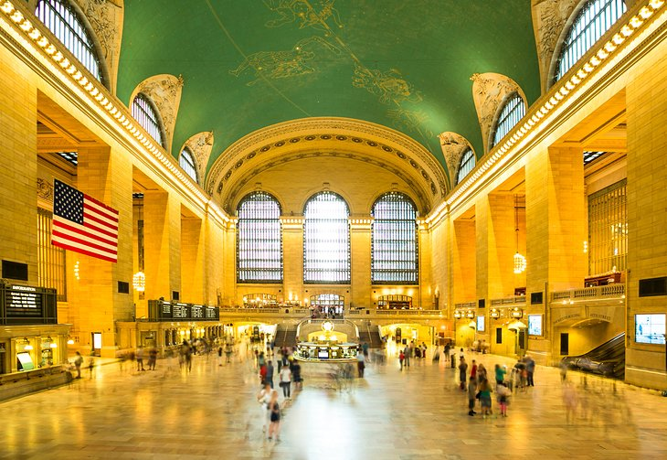
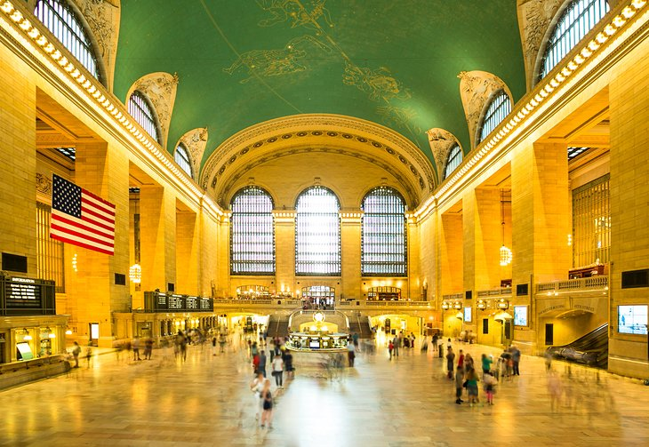

One of the greatest cities in the world, New York is always a whirlwind of activity, with famous sites at every turn and never enough time to see them all. Some people come here to enjoy the Broadway shows, others come specifically to shop and dine; and many come simply to see the sites: the Statue of Liberty, Empire State Building, Brooklyn Bridge, Central Park, historic neighborhoods, and numerous world famous museums
| Central-Park |
Empire State Building |
Grand Central Terminal  |
Statue of Liberty |
| Weather | Next |